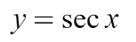
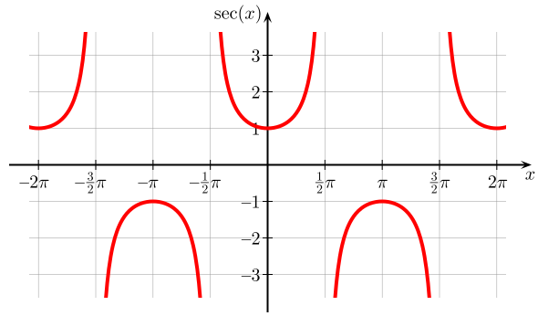
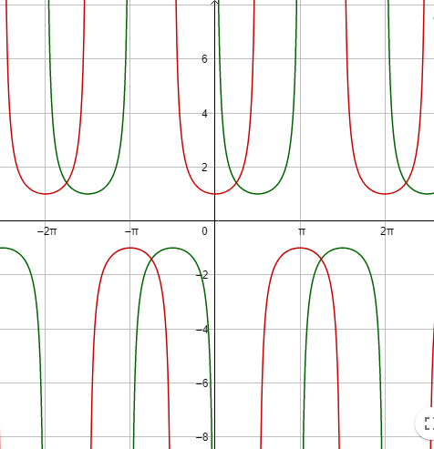

3. Chapters 6-7, 2 Adv Func
Clue 3:
Clue 3 Cheat Sheet
- The Mackenzie Science department has made scientific history, finding a strange behaving particle that seems to move like a graphed secant.
The equation of the movement (x and y coordinates) recorded by this particle is modelled as:


a) Estimate the IROC of y at x = 3.
b) Find the AROC of y from x = π/4 to x = 3π/4.
c) What is the equivalent csc function? Hint: Use a phase shift.
